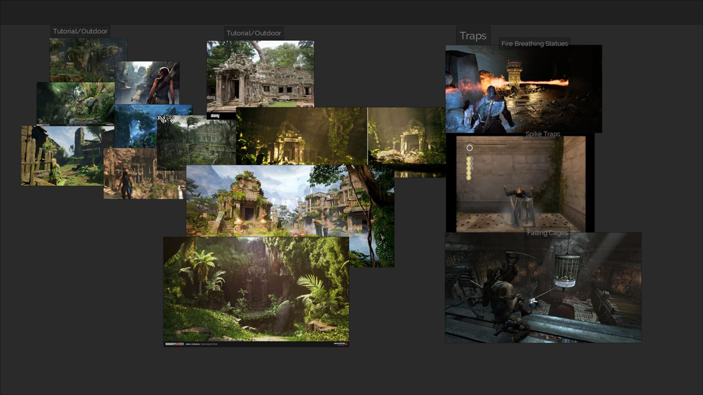
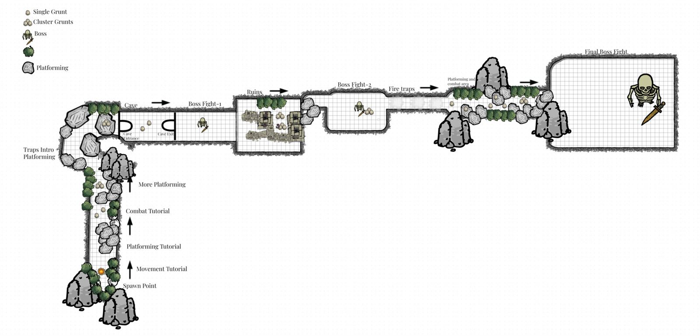
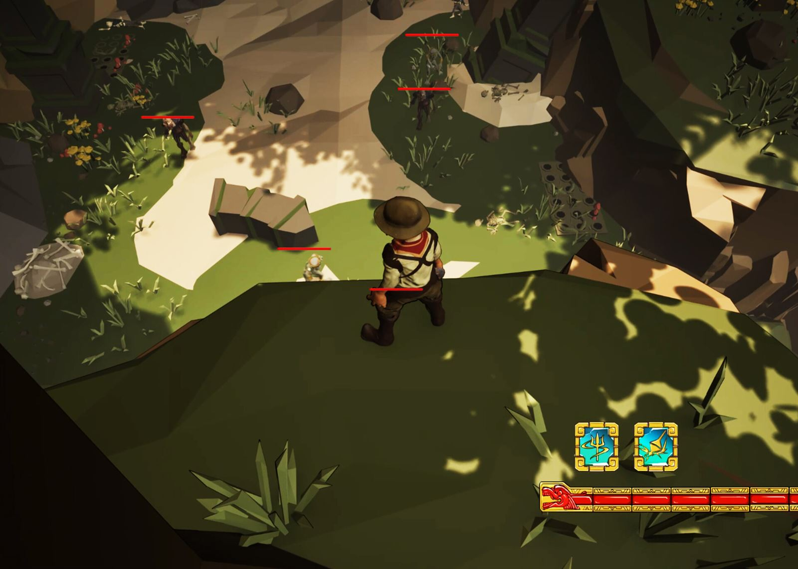
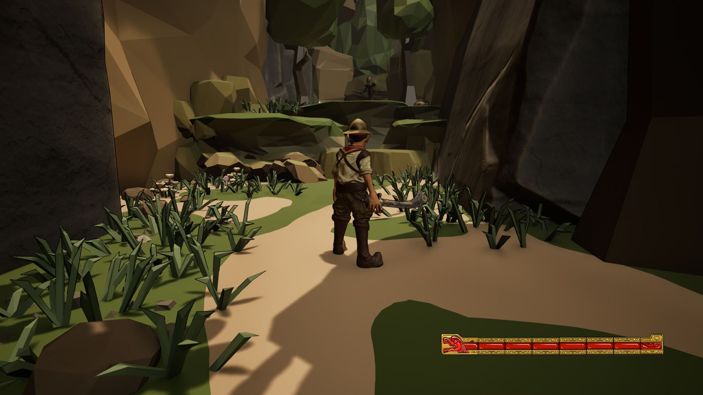
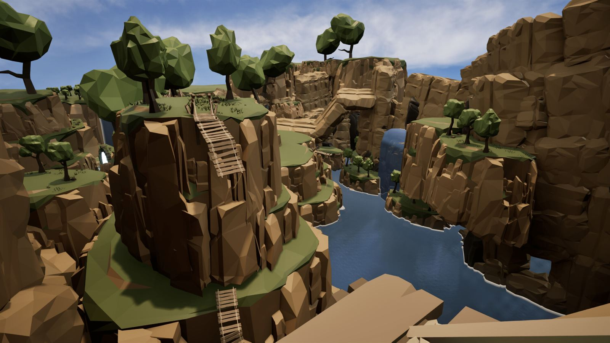
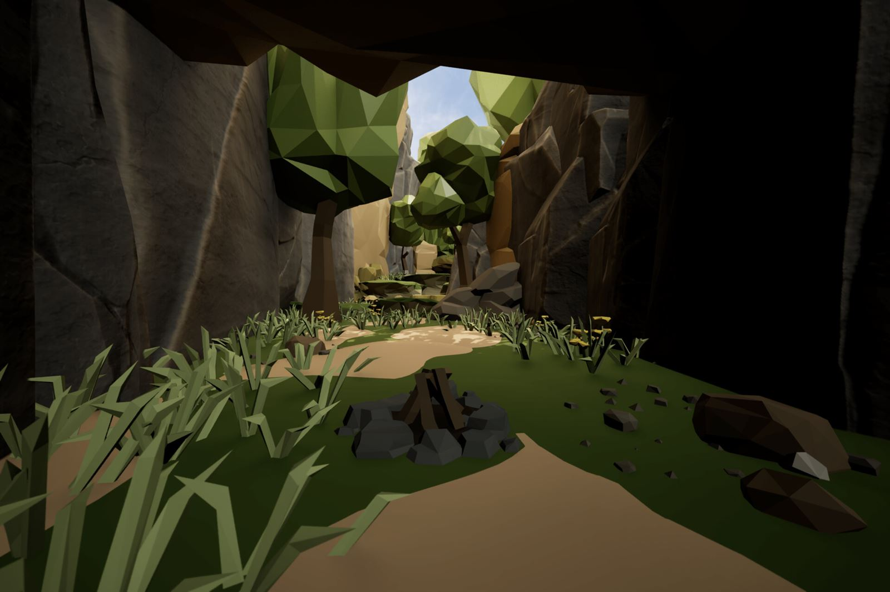

Breakdown
Cursebreaker: Bringer of Death
A fantasy action-RPG level with souls-like combat, made with my team for our final-term project in the Advanced Game Design course at Kwantlen Polytechnic University (KPU). My goal was a memorable level that unveils new abilities as players progress and draws them into a captivating story.
My part: level design, combat spaces and lighting. I also helped with the post-process materials and the game design.
See the finished projectPre-production
References
I gathered references for landmarks, environments, rooms and traps, as both reference material and inspiration. I compiled everything in PureRef into a one-page board that became the foundation for the level.

Story
Ajay is back to fight the dead, but this time his goal is far more personal: saving the life of a loved one.
Points of interest
- Tutorial Area
- Cliffs
- Cave
- Ruins
- Golem Temple
2D layout

Production
Understanding metrics
To nail the metrics, I built a gym out of default Unreal shapes and scattered markers around it, using the Unreal mannequin for scale. Once the metrics felt right, I blocked out a rough 3D mock-up of the whole level, start to finish.
Combat spaces
It's a hack-and-slash fest that pushes players into fights, but the combat spaces reward diverse strategies: vantage points, hidden traps and secret healing items all give players options.

Platforming areas
Platforming is the main way to traverse the entire map. There are hidden areas and vantage points that can only be reached by platforming.

Feedback session
Once the greybox was complete, I shared the level with instructors and classmates for feedback on platforming feel, narrative, combat and AI.
Set dressing
After a week of feedback and iteration, the greybox was locked and ready for set dressing. I mainly used Synty Studios' Dungeon pack, which had every asset I needed to populate the level the way my teammates and I wanted.


Level flow
Layout overview

The layout is linear, with secret areas reached by platforming. Each point of interest has exploration beats that reward the player with loot or story moments that expand on Ajay's adventure, and every area ends in a boss fight or an arena fight.
Intensity

Narrative pacing

Combat pacing

Closing thoughts
This was one of the biggest projects my team and I made during the course. With 10 weeks, we tried to fit in as much as we could to show off everyone's skills. It took two to three weeks of experimenting, several one-pagers and a few blockouts to land on a story and concept we were excited about. Despite the frustrating start, I'm really pleased with the result.
With more time, I'd make the cave-to-ruins connection larger and more interesting: after set dressing, the stretch between the two mid-bosses feels too short.
I'd also add a small hub area to give players more to explore and more rewards to unlock.